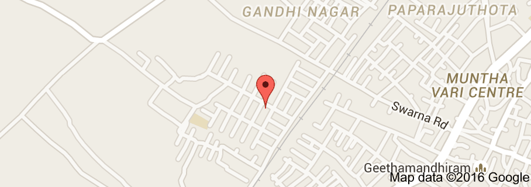

Welcome to Suryanarayanpur Panchayat
Suryanarayanpur is a village panchayat located in the Prakasam district of Andhra-Pradesh state,India. The latitude 15.84 and longitude 80.35 are the geocoordinate of the Chirala. Ammaravathi is the state capital for Chirala village. It is located around 164.2 kilometer away from Chirala.. The other nearest state capital from Chirala is Hyderabad and its distance is 351.5 KM. The other surrouning state capitals are Chennai 305.4 KM., Bangalore 437.0 KM., Pondicherry 437.3 KM.,
The surrounding nearby villages and its distance from Chirala are Thotavaripalem 3.0 KM , .
The official language of
The native language of Chirala is Telugu, English and most of the village people speak Telugu.
Panchayat Sun rise time
Chirala village is located in the UTC 5.30 time zone and it follows indian standard time(IST). Chirala sun rise time varies 8 minutes from IST. The vehicle driving side in Chirala is left, all vehicles should take left side during driving. Chirala people are using its national currency which is Indian Rupee and its internationl currency code is INR. Chirala phones and mobiles can be accesed by adding the indian country dialing code +91 from abroad. Chirala people are following the dd/mm/yyyy date format in day-to-day life. Chirala domain name extension( cTLD) is .in .
The nearest railway station in and around panchayat
The nearest railway station to Chirala is Chirala which is located in and around 1.0 kilometer distance. The following table shows other railway stations and its distance from Mamakudi.
Chirala railway station 1.0 KM.
Chiraila railway station 1.0 KM.
Stuartpuram railway station 6.9 KM.
Vetapalem railway station 8.2 KM.
Ramakrishnapuram Gate railway station 14.7 KM.
Nearest airport to Panchayat
Chirala‘s nearest airport is Vijayawada Airport situated at 90.6 KM distance. Few more airports around Chirala are as follows.
Vijayawada Airport 90.6 KM.
Donakonda Airport 92.3 KM.
Nellore Airport 160.2 KM.
Nearest districts to panchayat
Chirala is located around 49.6 kilometer away from its district head quarter ongole. The other nearest district head quarters is kurnool situated at 12.8 KM distance from Chirala . Surrounding districts from Chirala are as follows.
Guntur ( guntur ) district 53.1 KM.
Krishna ( machilipatnam ) district 93.0 KM.
West_Godavari ( eluru ) district 127.1 KM.
Nellore ( nellore ) district 158.1 KM.
Nearest town/city to Chirala
Chirala‘s nearest town/city/important place is Sriramnagar located at the distance of 1.3 kilometer. Surrounding town/city/TP/CT from Chirala are as follows.
Sriramnagar 1.3 KM.
Chirala 1.3 KM.
Vetapalem 8.0 KM.
Bapatla 14.4 KM.
Ponnur 33.1 KM.
Schools in and around panchayat
Chirala nearest schools has been listed as follows.
A.K & K English Medium High School
John Baburao Elementary School 0.5 KM.
0.9 KM.
Chiral Boys High School 1.4 KM.
Nr Pm High School 1.5 KM.
B J C R School Hostel 1.7 KM.
Pavan School Sisumandir 2.0 KM.
Beaches in and around panchayat
Chirala‘s nearest beach is Ennore Beach located at the distance of 290.5 kilometers. Surrounding beaches from Chirala are as follows.
Vadarevu
Ramapuram Beach
Ennore Beach 6KM.
5KM.
290.5 KM.
Thiruvottiyur Beach 297.0 KM.
Marina Beach 310.3 KM.
Santhome Beach 313.8 KM.
Elliots Beach 316.0 KM.
